Maîtriser l’onglet Accueil
Un guide pratique, étape par étape, pour mettre en forme un document Word. Ouvrez Word et réalisez chaque manipulation en même temps que le tutoriel.
Préparez votre document d’entraînement
Ce cours n’est pas une simple présentation des commandes. Vous allez créer un petit document et le transformer progressivement. À la fin, vous aurez utilisé les principales fonctions de l’onglet Accueil.
À faire maintenant
Repérez l’onglet Accueil
Commencez par regarder le haut de la fenêtre Word. Le ruban regroupe les commandes dans différents onglets. Cliquez sur Accueil : c’est ici que vous trouverez les outils que vous utiliserez le plus souvent pour travailler sur le texte.
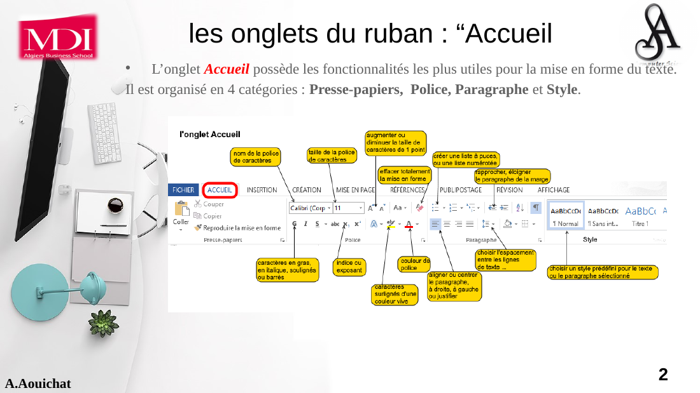
Essayez
Dans votre document, cliquez successivement sur les zones Presse-papiers, Police, Paragraphe et Styles. Ne modifiez encore rien : l’objectif est simplement de savoir où chercher une commande.
Changez l’apparence du texte
La mise en forme commence par la sélection du texte. Le groupe Police permet ensuite de modifier la police, la taille, les couleurs, la surbrillance, l’indice, l’exposant et les effets de texte.
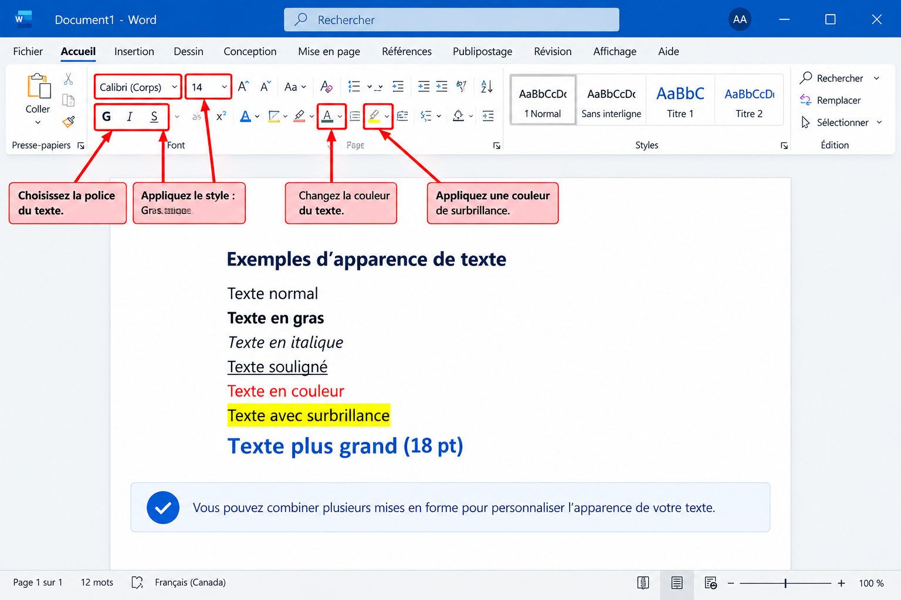
2.1 — Modifier la police et la taille
2.2 — Modifier la couleur du texte
La couleur de police modifie directement la couleur des caractères.
2.3 — Appliquer une couleur de surbrillance au texte
La surbrillance ajoute une couleur derrière les caractères, comme un surligneur.
2.4 — Utiliser l’indice et l’exposant
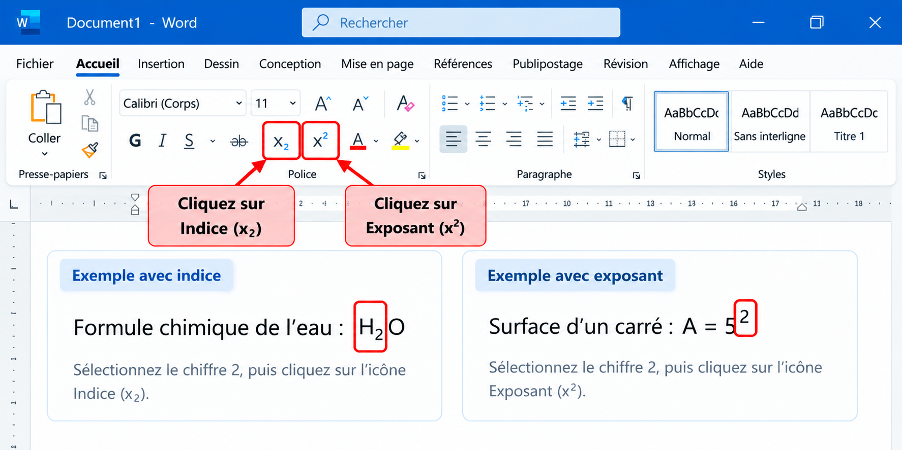
Indice place les caractères légèrement sous la ligne de base. Exemple : H2O.
Exposant place les caractères au-dessus de la ligne de base. Il est notamment utilisé pour les puissances : x2.
2.5 — Ajouter des effets au texte
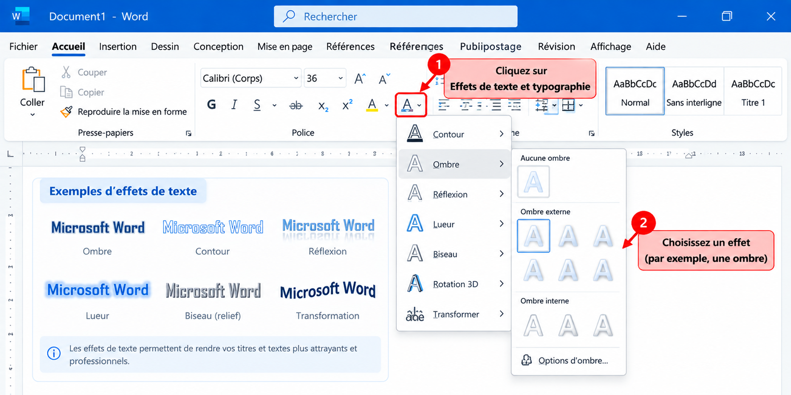
La commande Effets de texte et typographie permet d’ajouter des effets visuels. Selon la version de Word, vous pouvez notamment trouver Contour, Ombre, Réflexion et Lueur.
Essayez
Mettez des mots en gras, italique et souligné
Utilisez ces attributs pour attirer l’attention sur une partie précise du texte. Sélectionnez uniquement le mot ou le passage concerné avant d’appliquer la commande.
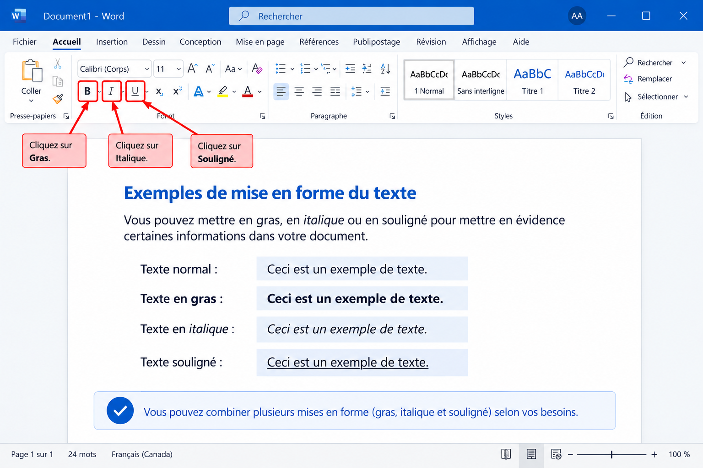
À vous de jouer
Organisez vos paragraphes
Les commandes du groupe Paragraphe n’agissent pas seulement sur quelques lettres : elles organisent un paragraphe entier. Vous y trouverez notamment les listes, les retraits, les alignements, l’espacement et la couleur d’arrière-plan.

Test rapide
Cliquez dans votre premier paragraphe sans sélectionner les lettres. Essayez un bouton d’alignement, puis annulez l’action. Vous constaterez que Word applique l’alignement au paragraphe.
4.1 — Appliquer une trame de fond au paragraphe
La trame de fond applique une couleur d’arrière-plan à la zone du paragraphe. Elle est utile pour créer un bloc visuel, mettre en évidence une consigne ou accompagner une bordure.
Essayez
Appliquez une trame de fond claire à votre premier paragraphe. Ajoutez ensuite une bordure dans l’étape 7 afin de créer un encadré complet.
Transformez du texte en liste
Une liste permet de rendre une information plus facile à lire et à mémoriser. Dans Word, vous pouvez créer une liste à puces, une liste numérotée ou une liste à plusieurs niveaux. Commencez toujours par sélectionner les lignes que vous souhaitez transformer.
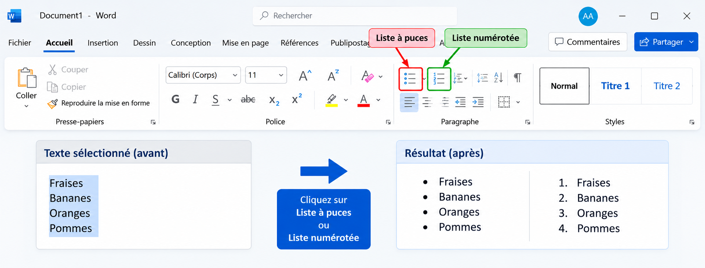
5.1 — Créer une liste à puces simple
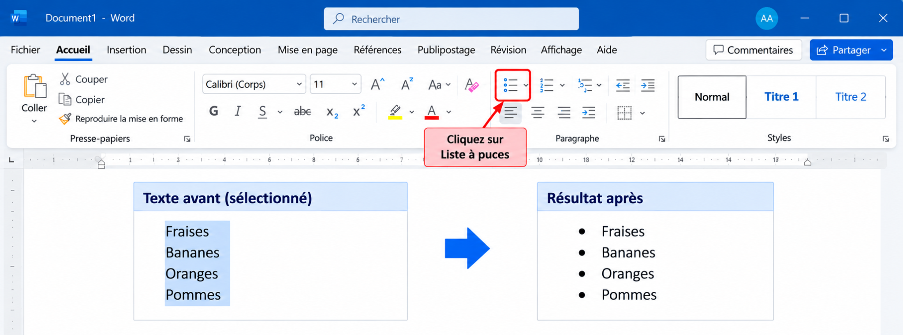
Choisissez les puces lorsque les éléments appartiennent au même groupe mais qu’aucun ordre particulier n’est nécessaire.
5.2 — Créer une liste numérotée simple
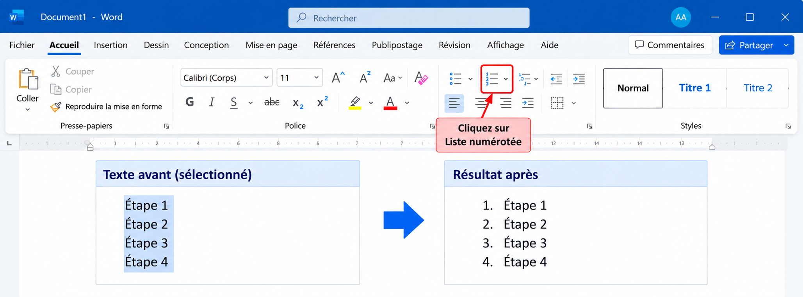
Utilisez la numérotation lorsqu’un ordre, une procédure ou une séquence doit être visible.
5.3 — Créer une liste à puces avec plusieurs niveaux
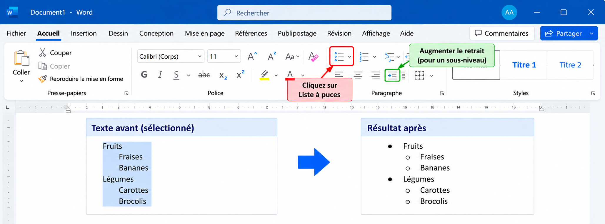
Une liste à plusieurs niveaux permet de distinguer une catégorie principale de ses sous-éléments.
Fraises
Bananes
Légumes
Carottes
Brocolis
- Fruits
- Fraises
- Bananes
- Légumes
- Carottes
- Brocolis
5.4 — Créer une liste numérotée à plusieurs niveaux
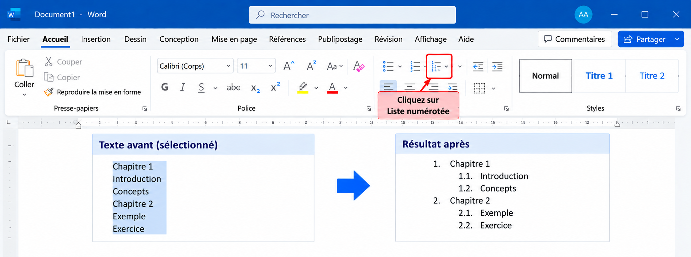
Ce format est utile pour structurer des chapitres, des procédures détaillées ou des plans hiérarchiques.
- Chapitre 1
- Introduction
- Concepts
- Chapitre 2
- Exemple
- Exercice
5.5 — Personnaliser une liste à puces à plusieurs niveaux
Dans cette partie, vous allez partir d’un texte simple, créer une liste hiérarchique, puis choisir une puce différente pour chaque niveau. Avancez dans l’ordre : chaque sous-section correspond à une manipulation précise.
5.5.1 — Sélectionner le texte à transformer
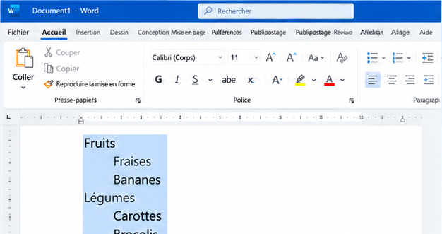
5.5.2 — Appliquer une première liste à puces
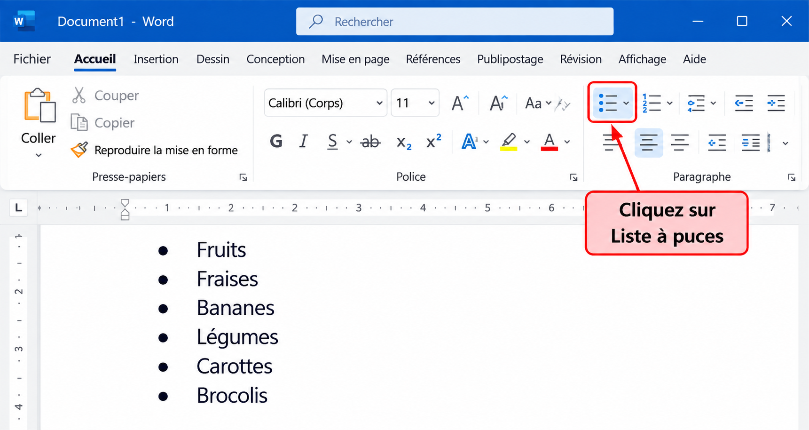
5.5.3 — Créer les différents niveaux
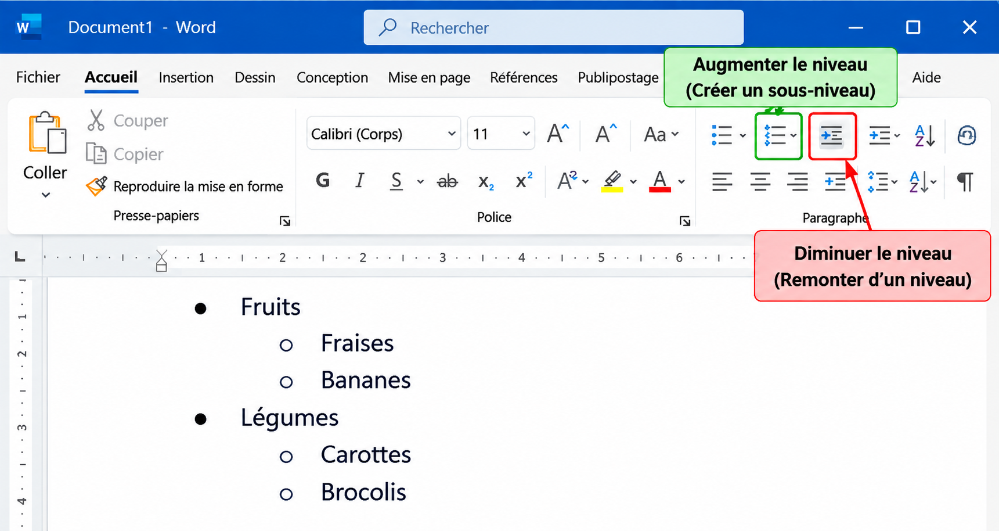
5.5.4 — Personnaliser la puce de chaque niveau
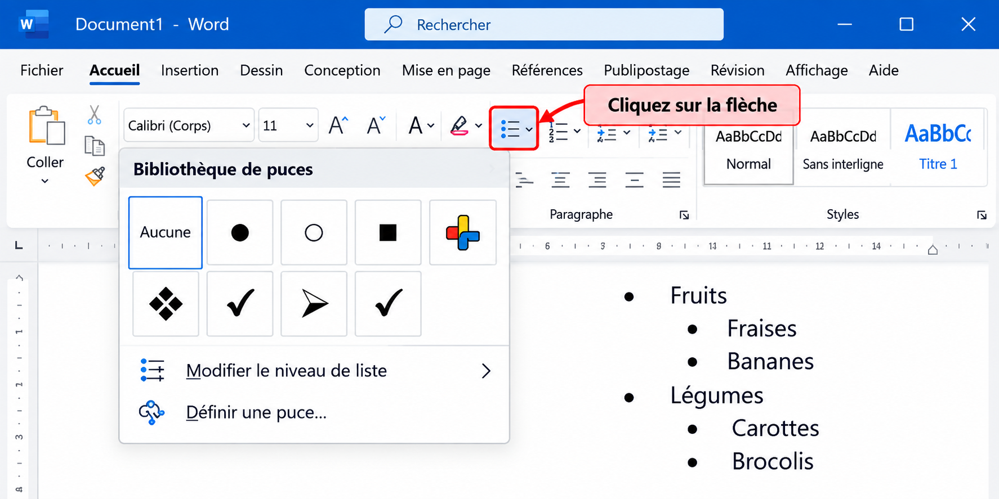
5.5.5 — Définir une nouvelle puce personnalisée
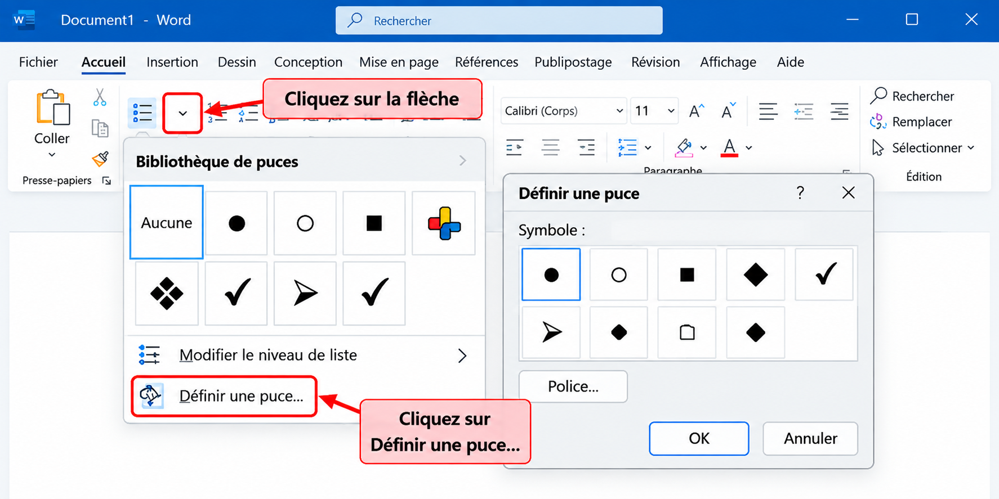
5.5.6 — Vérifier le résultat final
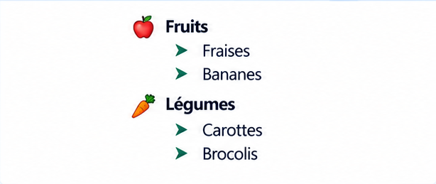
5.6 — Personnaliser une liste numérotée à plusieurs niveaux
Dans cette partie, vous allez construire une numérotation hiérarchique puis personnaliser chaque niveau. L’objectif est d’obtenir une structure claire du type 1., 1.1., 1.1.1., avec un format adapté à chaque niveau.
5.6.1 — Sélectionner le texte à structurer
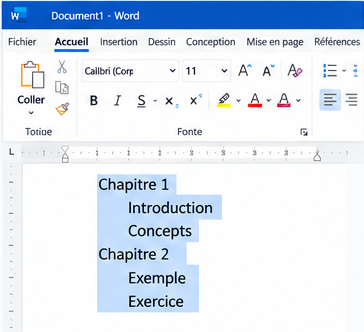
5.6.2 — Appliquer une liste à plusieurs niveaux
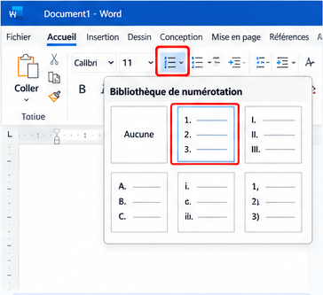
5.6.3 — Créer les sous-niveaux
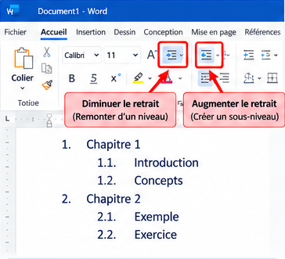
5.6.4 — Ouvrir les paramètres avancés de la liste
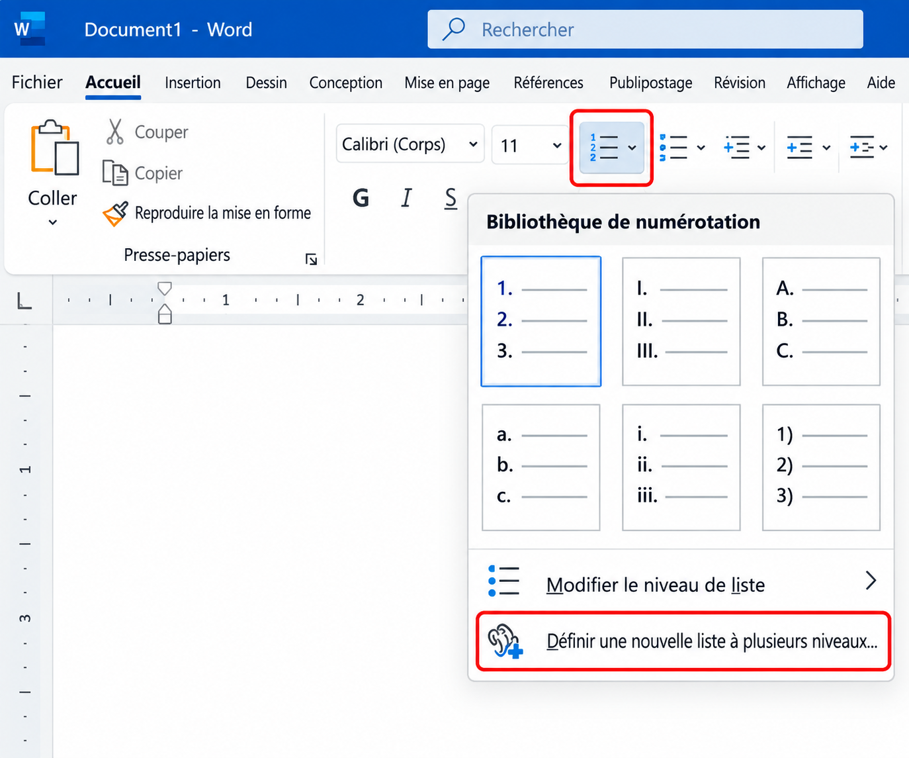
5.6.5 — Personnaliser le format de numérotation
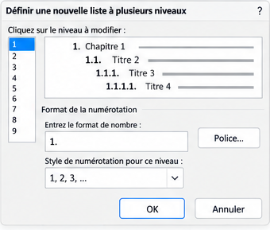
5.6.6 — Construire une numérotation liée aux niveaux précédents
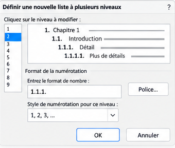
5.6.7 — Ajuster l’alignement et les retraits
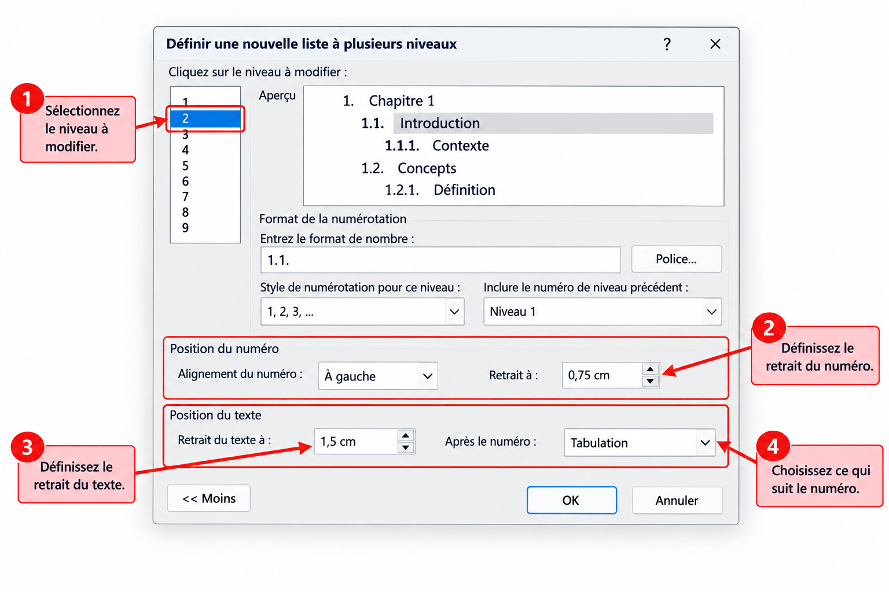
5.6.8 — Vérifier le résultat final
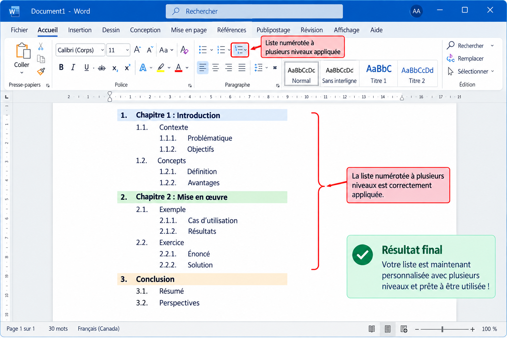
Exercice guidé — à vous de jouer
Dans votre document d’entraînement, réalisez les trois exemples suivants :
Alignez le texte selon son rôle
Word propose quatre alignements : gauche, centré, droite et justifié. Vous allez maintenant les tester directement.
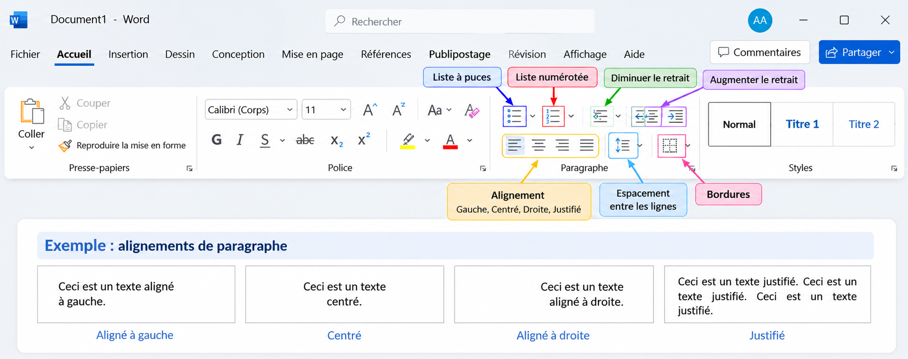
Manipulation
Ajoutez des bordures au texte et aux paragraphes
Les bordures permettent de mettre en évidence une information ou de structurer visuellement une partie du document. Dans Word, il est important de distinguer une bordure appliquée au texte d’une bordure appliquée au paragraphe.
7.1 — Appliquer une bordure au texte
Une bordure de texte entoure uniquement les caractères sélectionnés. Elle est pratique pour mettre en valeur un mot, un titre court ou une expression.
7.2 — Appliquer une bordure au paragraphe
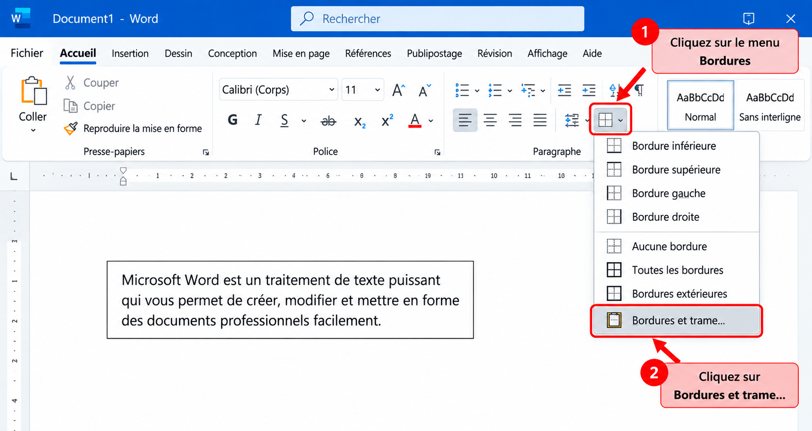
Une bordure de paragraphe encadre la zone du paragraphe. Elle peut servir à créer un bloc d’information, une consigne ou un encadré.
7.3 — Choisir les côtés et personnaliser la bordure
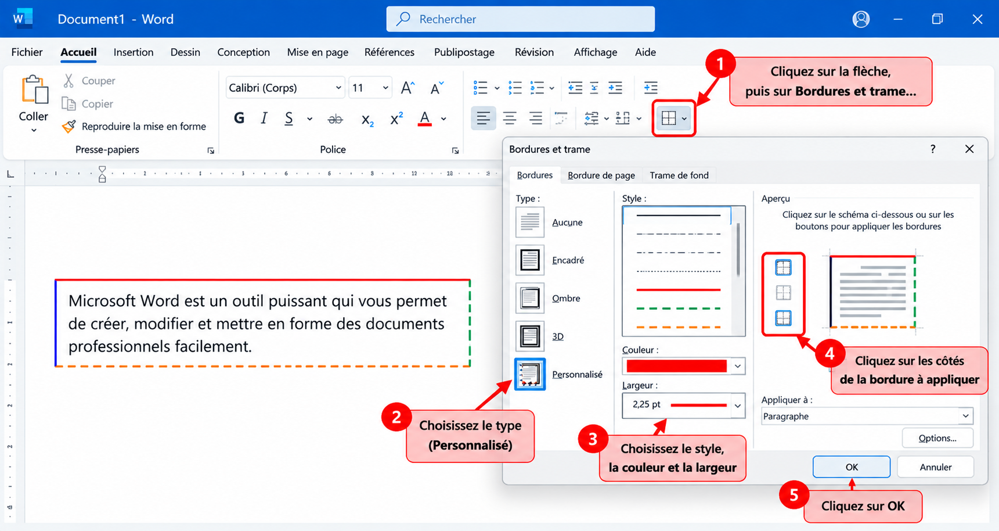
Essayez
Copiez ou déplacez du texte
Copier crée une copie tout en conservant le texte original. Couper retire le contenu sélectionné afin de le déplacer. Coller insère le contenu à la nouvelle position.
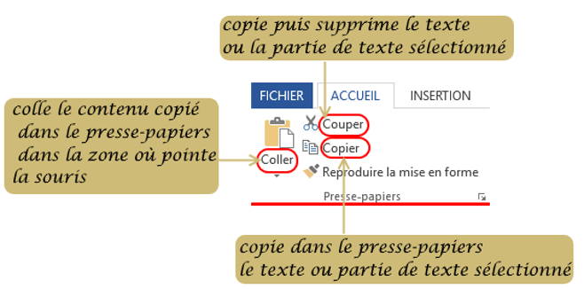
Uniformisez le document avec les Styles
Un style mémorise plusieurs choix de mise en forme. Il permet d’obtenir des titres et paragraphes cohérents sans refaire manuellement les mêmes réglages.
Modifier un style existant
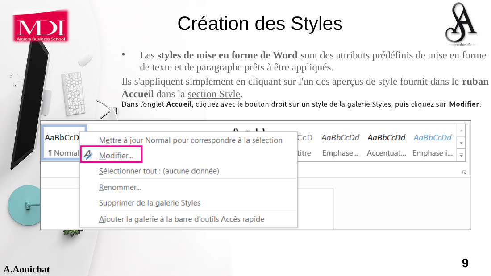
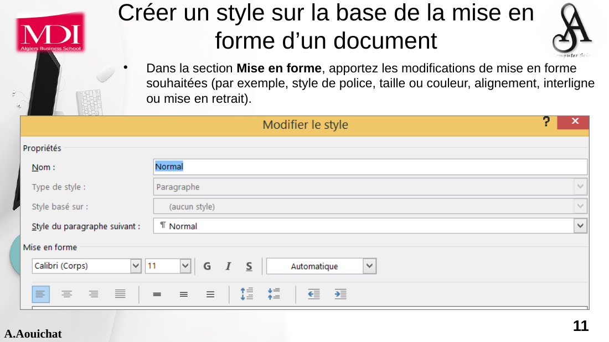
Créer votre propre style
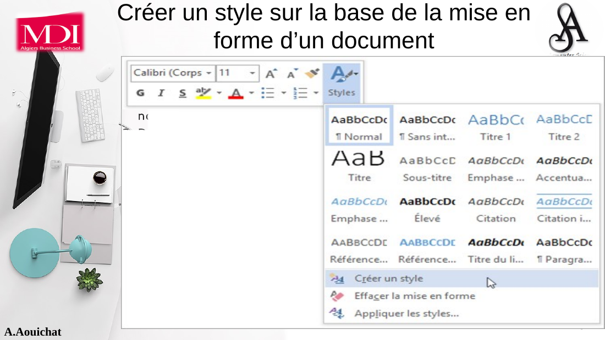
Finalisez votre document d’entraînement
Sans revenir aux étapes précédentes, essayez maintenant de réaliser les actions suivantes :
Exercices pratiques — consignes, fichier brut et résultat attendu
Pour chaque exercice, téléchargez d’abord le fichier brut, réalisez la mise en forme demandée, puis comparez votre travail avec la capture du résultat attendu. Les captures ci-dessous proviennent du support d’exercices fourni.
Programme de spectacles
Description : Cet exercice vous entraîne à mettre en forme un programme de spectacles en utilisant plusieurs commandes du groupe Police. Vous devrez différencier visuellement les titres, les compagnies, les durées, les artistes, les dates et les résumés en combinant police, taille, couleur, gras, italique, soulignement, ombre et alignement.
Consignes :
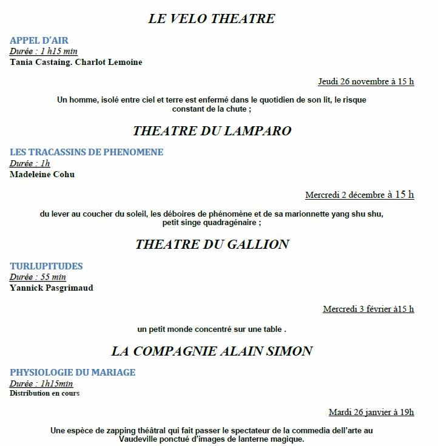
Lettre de résiliation
Description : Cet exercice porte sur la mise en page d’une lettre. L’objectif est d’organiser correctement les différents blocs du courrier et d’améliorer sa lisibilité grâce aux alignements, à la justification et aux retraits de paragraphe.
Consignes :
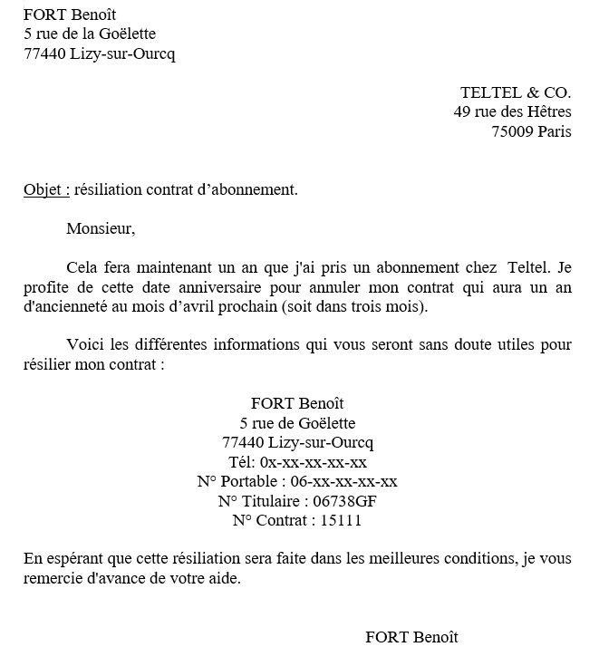
Bordures et trame
Description : Cet exercice vous permet de pratiquer les bordures et la trame de fond. Vous apprendrez à encadrer un titre et un sous-titre, à choisir une épaisseur de bordure et à appliquer une couleur d’arrière-plan afin de mettre certaines informations en évidence.
Consignes :
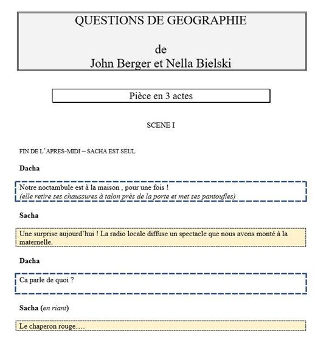
Listes à deux niveaux
Description : Cet exercice approfondit la création de listes à plusieurs niveaux. Vous devrez organiser le texte en quatre listes distinctes, utiliser deux niveaux de numérotation et régler correctement les retraits afin d’obtenir une structure hiérarchique claire et conforme au modèle.
Consignes :
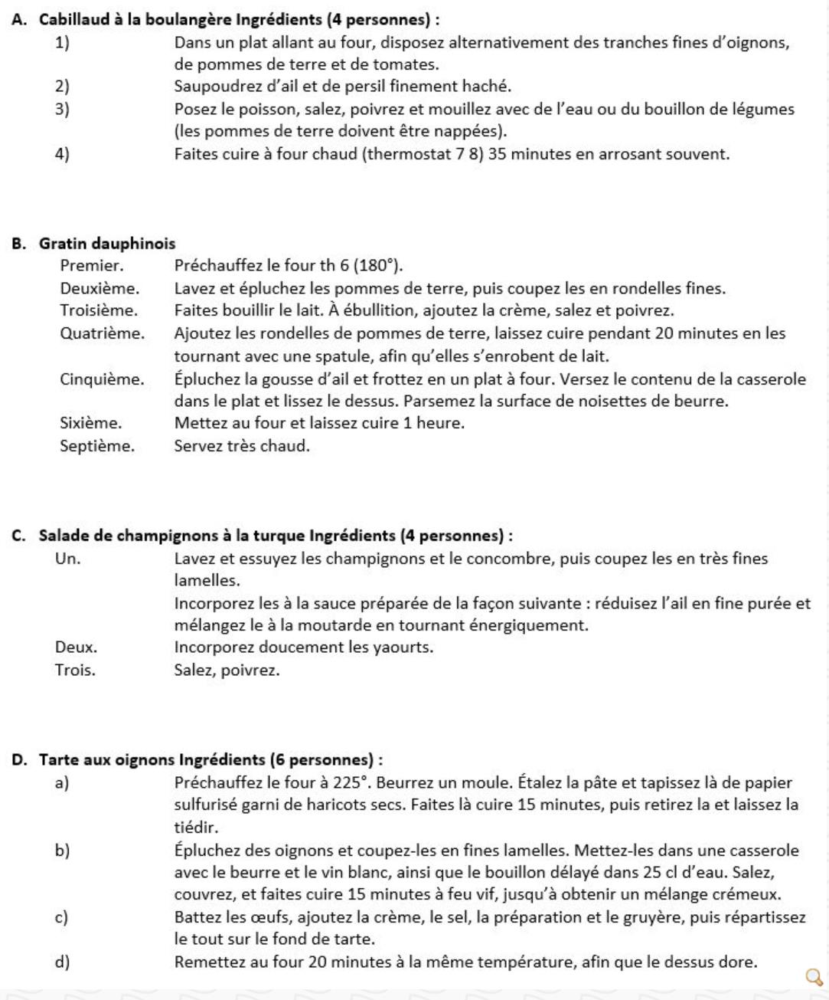